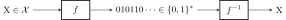
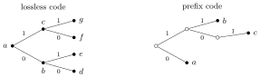
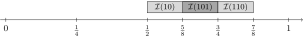
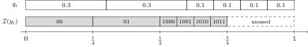
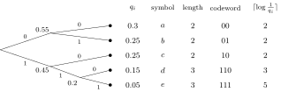
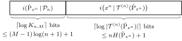

Lecture notes
Summary
- A lossless code gives distinct codewords to the symbols. It is uniquely decodable (UD) if every concatenation of codewords can be decoded, and a prefix code if no codeword is a prefix of another. Prefix codes are UD; they are the sets of leaves of binary trees, or the codes with disjoint dyadic intervals \(\Ical(y)\subseteq[0,1)\).
- Kraft–McMillan: lengths \(l_1,\ldots,l_M\) are those of a UD code \(\iff\) \(\sum_i2^{-l_i}\le1\) \(\iff\) they are those of a prefix code. So every UD code is equivalent to a prefix code.
- The dyadic code (also known as the canonical code) with lengths \(l_1\le\cdots\le l_M\) places intervals of lengths \(2^{-l_i}\) side by side from \(0\). The Shannon code with respect to \(\Q\) is the dyadic code with the lengths \(\lceil\log\frac{1}{q_i}\rceil\). The Huffman code merges two least likely symbols and splits the codeword of the merged symbol in two, recursively; it is an optimal UD code.
Minimum expected lengths, over lossless codes (the \(i\)-th shortest string goes to the \(i\)-th most likely symbol) and over UD codes (Huffman code):
\[\begin{aligned} H(\P)-\log\lceil\log(M+1)\rceil \le \bar{L}^*(\P) &\le H(\P) \le \bar{L}^*_{\mathrm{UD}}(\P) = \bar{L}(f_{\mathrm{Huffman},\P},\P)\\ &\le \bar{L}(f_{\mathrm{Shannon},\P},\P) < H(\P)+1. \end{aligned}\]Shannon’s lossless source coding theorem: for an i.i.d. source,
\[\lim_{n\to\infty}\frac{1}{n}\bar{L}^*(\P^n) = \lim_{n\to\infty}\frac{1}{n}\bar{L}^*_{\mathrm{UD}}(\P^n) = H(\P),\]so the entropy is the minimum number of bits per source symbol.
- A universal code, which encodes the type of \(x^n\) and the index of \(x^n\) in its type class, achieves \(H(\P)\) bits per symbol for every i.i.d. source, without knowing \(\P\).
Contents
- 3.1 Lossless codes
- 3.2 Uniquely decodable and prefix codes
- 3.3 Kraft–McMillan theorem
- 3.4 Code constructions
- 3.4.1 Dyadic code
- 3.4.2 Shannon code
- 3.4.3 Huffman code
- 3.5 Minimum expected length of UD codes
- 3.6 Shannon’s lossless source coding theorem
- 3.7 Universal coding
3.1 Lossless codes
A source \(\rv{X}\) with values in an alphabet \(\Xcal\) is represented by a sequence of bits, from which it is recovered exactly:

For example, \(\rv{X}\) is a file, a letter, a word, a sentence, or an image. We call \(\rv{X}\) the source, \(\Xcal\) the source alphabet, \(f:\Xcal\to\{0,1\}^*\) the encoder, and \(f^{-1}\) the decoder, where \(\{0,1\}^* := \bigcup_{k\ge0}\{0,1\}^k\) is the set of finite binary strings, including the empty string \(\emptyset\). The encoder must be invertible. In this lecture, the alphabet \(\Xcal = \{a_1,\ldots,a_M\}\) is finite, with \(M = |\Xcal|\ge2\).
A lossless code is a set
for some invertible (one-to-one) encoder \(f\), so that \(|\Ccal| = |\Xcal|\). The set \(\Ccal\) is also called the code or the codebook, and each \(y_i\) is a codeword.
Example. Let \(\Xcal = \{a,b,c,d,e,f,g\}\) and \(\Ccal = \{\emptyset,0,1,00,01,10,11\}\), with the encoder
| \(x\) | \(a\) | \(b\) | \(c\) | \(d\) | \(e\) | \(f\) | \(g\) |
| \(f(x)\) | \(\emptyset\) | \(0\) | \(1\) | \(00\) | \(01\) | \(10\) | \(11\) |
Length.
The length \(l(y)\) of a string \(y\in\{0,1\}^*\) is its number of bits: \(l(\emptyset) = 0\), \(l(0) = l(1) = 1\), \(l(01) = 2\), and so on. We write \(y = y(1)y(2)\cdots y(l(y))\), where \(y(i)\in\{0,1\}\) is the \(i\)-th bit of \(y\).
Expected codeword length.
If \(\rv{X}\sim\P\in\Pcal(\Xcal)\), the expected codeword length of the encoder \(f\) is
Optimal lossless codes.
From now on, \(\P\in\Pcal(\Xcal)\) with \(\P(a) > 0\) for all \(a\in\Xcal\), and the symbols are labeled so that \(p_1\ge p_2\ge\cdots\ge p_M > 0\), where \(p_i := \P(a_i)\).
Optimal lossless code. The minimum expected length of lossless codes, \(\bar{L}^*(\P) := \min_{f\text{ lossless}}\bar{L}(f,\P)\), is attained by the code that assigns to \(a_i\) the \(i\)-th string of the list \(\emptyset,0,1,00,01,10,11,000,\ldots\), and
Since there are \(2^k\) strings of length \(k\), the \(i\)-th string of the list has length \(\lfloor\log i\rfloor\), so the code of the box has the expected length \(\sum_ip_i\lfloor\log i\rfloor\). Conversely, let \(f\) be a lossless code. If \(p_i\ge p_j\) and \(l(f(a_i)) > l(f(a_j))\), exchanging the codewords of \(a_i\) and \(a_j\) changes the expected length by \(-(p_i-p_j)\bigl(l(f(a_i))-l(f(a_j))\bigr)\le0\) (exchange argument). So we can assume that \(l(f(a_1))\le\cdots\le l(f(a_M))\). Then \(f(a_i)\), the \(i\)-th shortest of \(M\) distinct strings, is at least as long as the \(i\)-th string of the list, and \(\bar{L}(f,\P)\ge\sum_ip_i\lfloor\log i\rfloor\), which gives the equality. For instance, the code of the example is optimal if \(\P(a)\ge\P(b)\ge\cdots\ge\P(g)\). Since \(ip_i\le p_1+\cdots+p_i\le1\), we have \(\lfloor\log i\rfloor\le\log i\le\log\frac{1}{p_i}\), which gives the upper bound. For the lower bound, define the pmf \({\Q := [q_1,\ldots,q_M]}\) by \({q_i := c\,2^{-\lfloor\log i\rfloor}}\), with \({c := 1/\sum_{j=1}^M2^{-\lfloor\log j\rfloor}}\). With the cross-entropy \(H(\P\|\Q) = H(\P)+D(\P\|\Q)\) of Lecture 1,
Since \(\lfloor\log i\rfloor = l\) for the \(2^l\) integers \(i = 2^l,\ldots,2^{l+1}-1\), and \(M\le2^{\lceil\log(M+1)\rceil}-1\),
This gives the lower bound. So a lossless code can beat the entropy, but by at most \({\log\lceil\log(M+1)\rceil}\) bits, and a concatenation of its codewords may not be decodable.
3.2 Uniquely decodable and prefix codes
A lossless code encodes one symbol. To encode a sequence \(x_1,\ldots,x_n\) of symbols, we concatenate their codewords, and we write \((f(x_1),\ldots,f(x_n))\) for the resulting sequence of bits. In the example above, the word fade is encoded as \(10\), \(\emptyset\), \(00\), \(01\), that is, as \(100001\). But \(100001\) is also the encoding of fde, of cbbbbc, and of faade, so the decoder cannot recover the word. This is the problem of concatenation.
Uniquely decodable code. A code \(\Ccal\) with encoder \(f\) is uniquely decodable (UD) if, for all \(n,m\ge1\) and all sequences of symbols \((x_1,\ldots,x_n)\ne(x'_1,\ldots,x'_m)\),
Prefix code. For \(y,y'\in\{0,1\}^*\), we write \(y\ll y'\) if \(y\) is a prefix of \(y'\), i.e., \(l(y)\le l(y')\) and \(y(i) = y'(i)\), \(i = 1,\ldots,l(y)\). A code \(\Ccal = \{y_1,\ldots,y_M\}\) is a prefix code (or prefix-free code) if no codeword is a prefix of another one:
We have
Indeed, with \(n = m = 1\), unique decodability says that \(f\) is one-to-one. A prefix code is UD: in a sequence of bits, the first codeword is the only codeword that is a prefix of the sequence (of two prefixes of the same sequence, one is a prefix of the other), so the decoder reads it, removes it, and decodes the rest in the same way. Both inclusions are strict. The code of the example is lossless but not UD. The code \(\{0,01\}\) is not a prefix code, since \(0\ll01\), but it is UD: a sequence of bits can be decoded from the right, since each \(1\) ends a codeword \(01\).
Trees.
The set \(\{0,1\}^*\) is an infinite binary tree: its root is \(\emptyset\), and the two children of a node \(y\) are \(y0\) and \(y1\), so that each node is labeled by the bits on the edges from the root to it. A lossless code is therefore a subset of the nodes of a tree. A prefix code is the set of leaves of a tree, namely of the tree made of its codewords and their prefixes, since no codeword lies below another one. For instance, the code of the example is the set of all nodes of the tree of depth \(2\) (left), and the prefix code \(a\mapsto0\), \(b\mapsto11\), \(c\mapsto101\) is the set of leaves of the tree on the right (upper edges are labeled \(1\), lower edges \(0\)):

We will see that UD codes are no better than prefix codes (Section 3.3), build prefix codes, including the optimal Huffman code (Section 3.4), and show that the best UD codes are within one bit of the entropy (Section 3.5) and that, with long blocks, lossless and UD codes need \(H(\P)\) bits per symbol (Section 3.6), even without knowing \(\P\) (Section 3.7).
3.3 Kraft–McMillan theorem
Kraft–McMillan theorem. Converse (necessity): if a code \(\Ccal = \{y_1,\ldots,y_M\}\) is UD, then its lengths satisfy \(\sum_{i=1}^M 2^{-l(y_i)} \le 1\), the Kraft–McMillan (K-M) inequality. Achievability (sufficiency): for all integers \(l_1,\ldots,l_M\ge0\) such that \(\sum_{i=1}^M 2^{-l_i}\le1\), there exists a prefix code \(\Ccal' = \{y'_1,\ldots,y'_M\}\) with \(l(y'_i) = l_i\) for all \(i\).
Hence lengths \(l_1,\ldots,l_M\) are those of a UD code \(\iff\) they satisfy the K-M inequality \(\iff\) they are those of a prefix code. So every UD code \(\Ccal\) is equivalent to some prefix code \(\Ccal'\), denoted by \(\Ccal\sim\Ccal'\): the two codes have the same lengths.
Proof of the converse.
Let \(f\) be the encoder of a UD code, with lengths \(l_i := l(f(a_i))\) and \(l_{\max} := \max_i l_i\), and let \(f^n(x^n) := (f(x_1),\ldots,f(x_n))\) for \(x^n\in\Xcal^n\), of length \(l(f(x_1))+\cdots+l(f(x_n))\). Since the code is UD, no codeword is empty (if \(f(a) = \emptyset\), then \(a\) and \(aa\) have the same encoding), and \(f^n\) is one-to-one, so at most \(2^L\) sequences \(x^n\) have an encoding of \(L\) bits. Hence, for every \(n\ge1\),
so that \(\sum_i2^{-l_i}\le(n\,l_{\max})^{1/n}\to1\) as \(n\to\infty\).
For the achievability, given lengths that satisfy the K-M inequality, we construct a prefix code with these lengths in Section 3.4.1: the dyadic code.
3.4 Code constructions
We build prefix codes from given lengths (dyadic code), and from a distribution \(\Q\): the dyadic code with the lengths \(\lceil\log\frac{1}{q_i}\rceil\) (Shannon code), and a recursive construction with optimal lengths (Huffman code).
3.4.1 Dyadic code
Interval representation.
A string \(y = y(1)\cdots y(l)\in\{0,1\}^*\) of length \(l = l(y)\) represents the number
written in binary, and the interval
of the numbers whose binary expansion (the one not ending with \(111\cdots\)) starts with \(y\). The intervals \(\Ical(y)\) are the dyadic intervals \([k2^{-l},(k+1)2^{-l})\), with integers \(l\ge0\) and \(0\le k<2^l\), where \(y\) is \(k\) written with \(l\) bits. For \(y,y'\in\{0,1\}^*\) with \(l(y)\le l(y')\),
and otherwise \(\Ical(y)\cap\Ical(y') = \emptyset\). Indeed, \(r(y') = 0.y'000\cdots\) starts with \(y\), i.e., \(r(y')\in\Ical(y)\), if and only if \(y\ll y'\). In this case, every number in \(\Ical(y')\) starts with \(y'\), hence with \(y\). Otherwise, the numbers in \(\Ical(y')\) start with \(y'\), hence not with \(y\). Therefore,
In particular, a prefix code satisfies the K-M inequality: its intervals are disjoint subsets of \([0,1)\), so \(\sum_{y\in\Ccal}2^{-l(y)} = \sum_{y\in\Ccal}|\Ical(y)| \le 1\).
Example. Here \(\Ical(10) = [0.5, 0.75)\supseteq\Ical(101) = [0.625, 0.75)\), since \(10\ll101\), while \(\Ical(110) = [0.75, 0.875)\) is disjoint from both. So \(\{10,101,110\}\) is not a prefix code, but \(\{10,110\}\) is.

Proof of the achievability.
Let \(l_1\le\cdots\le l_M\) satisfy \(\sum_i2^{-l_i}\le1\). The intervals \([r_i,r_{i+1})\), where \({r_i := \sum_{j<i}2^{-l_j}}\), have lengths \(2^{-l_i}\) and are placed side by side from \(r_1 = 0\) to \(r_{M+1}\le1\). Since \(l_j\le l_i\) for \(j<i\), \(r_i\) is a multiple of \(2^{-l_i}\), so \([r_i,r_{i+1}) = \Ical(y_i)\) is a dyadic interval, where \(y_i\) is \(r_i\) written in binary with \(l_i\) bits. These intervals are disjoint, so \(\{y_1,\ldots,y_M\}\) is a prefix code with lengths \(l_1,\ldots,l_M\). We call it the dyadic code with the lengths \(l = (l_1,\ldots,l_M)\) (also known as the canonical code), with encoder \(f_{\mathrm{dyadic},l}(a_i) := y_i\). For instance, the lengths \(l = (1,2,3,3)\) give \(r_i = 0,\frac12,\frac34,\frac78\) and the dyadic code \(\{0,10,110,111\}\). For lengths in another order, the symbols are first sorted by increasing length.
3.4.2 Shannon code
Let \(\Q = [q_1,\ldots,q_M]\) with
for example a pmf sorted in decreasing order. The lengths
satisfy the K-M inequality, since \(2^{-l_i}\le q_i\). The Shannon code with respect to \(\Q\) is the dyadic code with the lengths \(l = (l_1,\ldots,l_M)\), with encoder \(f_{\mathrm{Shannon},\Q} := f_{\mathrm{dyadic},l}\). A symbol of probability \(q_i\) gets about \(\log\frac{1}{q_i}\) bits, so that, for \(\Q = \P\), the expected length is close to \(H(\P)\) (Section 3.5).
Example. For \(\Q = [0.3, 0.3, 0.1, 0.1, 0.1, 0.1]\), the lengths are \(2,2,4,4,4,4\), the intervals start at \(r_i = 0,\frac14,\frac12,\frac{9}{16},\frac58,\frac{11}{16}\), and the codewords are \(00\), \(01\), \(1000\), \(1001\), \(1010\), \(1011\).

Its expected length is \(0.6\times2+0.4\times4 = 2.8\) bits, while \(H(\Q)\approx2.37\) bits. The intervals end at \(\sum_i2^{-l_i} = 0.75\): the rest of \([0,1)\) is unused, so some codewords could be shortened.
3.4.3 Huffman code
Let \(\Q = [q_1,\ldots,q_M]\in\Pcal(\Xcal)\), with \(M\ge2\) and all \(q_i > 0\). The Huffman code with respect to \(\Q\), with encoder \(f_{\mathrm{Huffman},\Q}\), is given by a recursive algorithm.
Huffman algorithm. Input: \(\Q = [q_1,\ldots,q_M]\). Output: the encoder \(f\).
- Label the symbols so that \(q_1\ge\cdots\ge q_M\) (ties broken arbitrarily). If \(M = 2\), return \(f(a_1) := 0\) and \(f(a_2) := 1\).
- Merge \(a_{M-1}\) and \(a_M\) into one symbol \(a'\): \(\Q' := [q_1,\ldots,q_{M-2},q_{M-1}+q_M]\).
- Run the algorithm on \(\Q'\), which returns \(f' := f_{\mathrm{Huffman},\Q'}\).
- Return \(f(a_i) := f'(a_i)\) (\(i\le M-2\)), \(f(a_{M-1}) := f'(a')0\), \(f(a_M) := f'(a')1\).
By induction on \(M\), \(f\) is a prefix code, since step 4 replaces the codeword \(f'(a')\) of the prefix code \(f'\) by its two extensions. With \(l'_1,\ldots,l'_{M-1}\) the lengths of \(f'\) (\(l'_{M-1}\) for \(a'\)), \(l_i = l'_i\) for \(i\le M-2\) and \(l_{M-1} = l_M = l'_{M-1}+1\), so that \(\sum_i2^{-l_i} = 1\) by induction, as \(2^{-l_{M-1}}+2^{-l_M} = 2^{-l'_{M-1}}\), and
Unrolled, the algorithm merges two least likely groups of symbols at each step. The merges form a binary tree, the merge tree, whose leaves are the symbols: the codeword of a symbol is read on the path from the root to its leaf, with \(0\) on the more likely branch of each merge, and its length is the depth of its leaf.
Example. For \(\Q = [0.3, 0.25, 0.25, 0.15, 0.05]\) on \(\Xcal = \{a,b,c,d,e\}\), the algorithm merges \(d\) and \(e\) into a group of probability \(0.2\), then this group and \(c\) into a group of probability \(0.45\), then \(a\) and \(b\) into a group of probability \(0.55\), and finally these two groups, which gives the merge tree and the codewords:

Its expected length is \(\bar{L}(f_{\mathrm{Huffman},\Q},\Q) = 2.2\) bits, while \(H(\Q)\approx2.15\) bits. The Shannon code with respect to \(\Q\) has lengths \(\lceil\log\frac{1}{q_i}\rceil = 2,2,2,3,5\) (last column) and an expected length of \(2.3\) bits.
Optimality of the Huffman code. The Huffman code attains the minimum expected length of UD codes:
Let \(f^*_\Q\) be an optimal UD code, \(\bar{L}(f^*_\Q,\Q) = \bar{L}^*_{\mathrm{UD}}(\Q)\), with lengths \(l_1,\ldots,l_M\) of maximum \(l_{\max}\). By the Kraft–McMillan theorem, these lengths minimize \(\sum_iq_il_i\) over the integer lengths that satisfy the K-M inequality. This gives the necessary conditions 1 and 2, and their consequence 3:
- \(\sum_i2^{-l_i} = 1\). Otherwise, this sum of multiples of \(2^{-l_{\max}}\) is at most \(1-2^{-l_{\max}}\), and decreasing a length \(l_{\max}\) by one keeps the K-M inequality and reduces \(\sum_iq_il_i\).
- Hence at least two symbols have the length \(l_{\max}\): otherwise, \(2^{-l_{\max}} = 1-\sum_{i:\,l_i<l_{\max}}2^{-l_i}\) would be a multiple of \(2^{1-l_{\max}}\), like \(1\) and each \(2^{-l_i}\) with \(l_i<l_{\max}\).
- By the exchange argument of Section 3.1, \(f^*_\Q\) can be chosen so that these two symbols are \(a_{M-1}\) and \(a_M\), two least likely ones: \(l_{M-1} = l_M = l_{\max}\).
We show by induction on \(M\) that the Huffman code is optimal. For \(M = 2\), its lengths \(1,1\) are optimal, since no codeword of a UD code is empty (Section 3.3). Let \(M\ge3\), assume that it is optimal for every pmf on \(M-1\) symbols, and suppose it is not for \(\Q\): \(\bar{L}(f^*_\Q,\Q) < \bar{L}(f_{\mathrm{Huffman},\Q},\Q)\). By item 3, as \(2^{-l_{\max}}+2^{-l_{\max}} = 2^{1-l_{\max}}\), the lengths \(l_1,\ldots,l_{M-2},l_{\max}-1\) satisfy the K-M inequality: they are those of a prefix code \(\tilde{f}_{\Q'}\) for \(\Q'\), induced by \(f^*_\Q\), with \(l_{\max}-1\) bits for \(a'\), and
which contradicts the optimality of the Huffman code for \(\Q'\).
3.5 Minimum expected length of UD codes
Entropy bounds. The minimum expected length of UD codes \(\bar{L}^*_{\mathrm{UD}}(\P)\), attained by the Huffman code, satisfies
Lower bound.
Let \(l_1,\ldots,l_M\) be the lengths of the Huffman code with respect to \(\P\). By Section 3.4.3, this code is optimal and \(\sum_i2^{-l_i} = 1\), so \(\Q := [2^{-l_1},\ldots,2^{-l_M}]\) is in \(\Pcal(\Xcal)\) and, with the cross-entropy \(H(\P\|\Q)\) of Lecture 1,
Equality holds if and only if \(\P = \Q\), i.e., \(p_i = 2^{-l_i}\) for all \(i\), which requires each \(p_i\) to be a power of \(\frac{1}{2}\) (a dyadic distribution).
Upper bound.
The Shannon code with respect to \(\P\) is a prefix code, hence UD, with lengths \(\lceil\log\frac{1}{p_i}\rceil < \log\frac{1}{p_i}+1\), so
Huffman lengths.
The two bounds give \(D(\P\|\Q) = \bar{L}^*_{\mathrm{UD}}(\P)-H(\P) < 1\): the Huffman lengths are close to \(\log\frac{1}{p_i}\) on average, but not symbol by symbol. For \(\P = [\frac12,\frac12-\epsilon,\epsilon]\), they are \(1,2,2\), while \(\log\frac{1}{\epsilon}\to\infty\) as \(\epsilon\to0\).
3.6 Shannon’s lossless source coding theorem
For one symbol, a lossless code can beat the entropy, \(\bar{L}^*(\P)\le H(\P)\), and a UD code may need almost one more bit, \(\bar{L}^*_{\mathrm{UD}}(\P) < H(\P)+1\). Both differences vanish per symbol when we encode long blocks at once. We may choose the block length \(n\): a UD code \(f\) for \(\Xcal^n\), used on the successive blocks of a long sequence \(x_1x_2\cdots\), gives a decodable sequence of bits, with \(\frac1n\bar{L}(f,\P^n)\) bits per source symbol on average, at the price of a delay of \(n\) symbols. A code that is only lossless can encode a single block, e.g., a whole file of \(n\) symbols.
Shannon’s lossless source coding theorem. Let \(\rv{X}^n\sim\P^n\), and encode blocks of \(n\) symbols, i.e., use codes for the alphabet \(\Xcal^n\). The minimum expected length per source symbol tends to the entropy:
By Section 3.5 for \(\P^n\), and since \(H(\P^n) = nH(\P)\) (Lecture 1),
and \(\lim_{n\to\infty}\frac{1}{n}\bar{L}^*_{\mathrm{UD}}(\P^n) = H(\P)\). In the same way, Section 3.1 for \(\P^n\), whose alphabet \(\Xcal^n\) has \(M^n\) blocks, gives \(nH(\P)-\log\lceil\log(M^n+1)\rceil\le\bar{L}^*(\P^n)\le nH(\P)\). Since \(\lceil\log(M^n+1)\rceil < \log(2M^n)+1 = n\log M+2\),
and \(\lim_{n\to\infty}\frac{1}{n}\bar{L}^*(\P^n) = H(\P)\). No infinite delay is needed: \(n\ge1/\epsilon\) gets within \(\epsilon\) of \(H(\P)\) bits per symbol, which no UD code beats. Shannon (1948) proved the limit for UD codes in this way; the lower bound for each \(n\) relies on McMillan’s inequality (1956). Problem 6 of the exercises follows this convergence on a binary source, with blocks of \(n = 1, 2, 3\) symbols.
3.7 Universal coding
The codes above are designed for a known distribution \(\P\). A universal code works for every i.i.d. source, without knowing its distribution. It uses the types of Lecture 2. A sequence \(x^n\in\Xcal^n\) is determined by its type \(\hat{\P}_{x^n}\in\Pcal_n\) and by its index in its type class:
where the types are numbered \(i(\hat{\P}\cond\Pcal_n)\in\{0,\ldots,K_{n,M}-1\}\), and the sequences of each type class \(\Tcal^{(n)}(\hat{\P})\) are numbered \(i\bigl(x^n\cond\Tcal^{(n)}(\hat{\P})\bigr)\in\{0,\ldots,|\Tcal^{(n)}(\hat{\P})|-1\}\). The universal encoder \(f_{\mathrm{U}}\) writes the two indices in binary, with \(\lceil\log K_{n,M}\rceil\) and \(\lceil\log|\Tcal^{(n)}(\hat{\P}_{x^n})|\rceil\) bits:

It is a prefix code: the decoder reads the first \(\lceil\log K_{n,M}\rceil\) bits, which give the type \(\hat{\P}_{x^n}\), hence the number of bits of the second index, which gives \(x^n\).
Example. A binary sequence \(x^{100}\) with ten \(1\)s has the type \(\hat{\P}_{x^{100}} = [0.9,0.1]\), one of \(K_{100,2} = 101\) types, encoded with \(7\) bits, and its type class has \(\binom{100}{10}\approx2^{43.98}\) sequences, so its index takes \(44\) bits: \(f_{\mathrm{U}}\) uses \(51\) bits instead of \(100\), while \(100\,H(\hat{\P}_{x^{100}})\approx46.9\) bits.
The bounds in the figure come from \(K_{n,M}\le(n+1)^{M-1}\) and \(|\Tcal^{(n)}(\hat{\P})|\le2^{nH(\hat{\P})}\) (Lecture 2, Section 2.2), so that
Let \(\rv{X}^n\sim\P^n\). For every \(a\), \(\hat{\P}_{\rv{X}^n}(a) = \frac1n\sum_{t=1}^n\ind{\rv{X}_t = a}\) has mean \(\P(a)\), and the entropy is concave on \(\Pcal(\Xcal)\) (Lecture 1), so Jensen’s inequality gives \(\EE_{\P^n}\bigl[H(\hat{\P}_{\rv{X}^n})\bigr] \le H\bigl(\EE_{\P^n}[\hat{\P}_{\rv{X}^n}]\bigr) = H(\P)\). Hence, for every \(n\),
Since \(f_{\mathrm{U}}\) is UD, the left-hand side is at least \(H(\P)\), by Section 3.5 for \(\P^n\) restricted to the blocks of positive probability. So the universal code achieves \(H(\P)\) bits per symbol for every \(\P\in\Pcal(\Xcal)\), although it does not depend on \(\P\). The price of universality is about \(\frac{(M-1)\log n}{n}\) bits per symbol, spent on the type. In the exercises, Problem 8 introduces arithmetic coding, which encodes a block symbol by symbol, with less than \(nH(\P)+2\) bits on average, and is universal too when it learns the probabilities from the symbols already encoded; Problem 9 halves the price of universality, in the worst case, with a better distribution on the types.
Quiz
22 questions · one correct answer each
Pick an answer to check it. Your answers are kept in this browser only.
0 of 22 answered
-
Which of the following codes is a prefix code?
-
The code \(\{0, 01\}\), with the encoder \(a\mapsto0\), \(b\mapsto01\), is
-
Let \(f(a) = 0\), \(f(b) = 1\) and \(f(c) = 01\). How many sequences of symbols are encoded as \(0101\)?
-
Let \(f(a) = 0\), \(f(b) = 10\), \(f(c) = 110\) and \(f(d) = 111\). Which sequence of symbols is encoded as \(1100100111\)?
-
Which lengths can be the codeword lengths of a uniquely decodable code with \(M = 4\) codewords?
-
Let \(\Ccal\) be any uniquely decodable code with lengths \(1, 2, 3\). Which statement is always true?
-
A fourth codeword \(y\) is added to the prefix code \(\{0, 10, 110\}\), so that the new code is still a prefix code. What is the smallest possible length \(l(y)\)?
-
What is the interval \(\Ical(011)\)?
-
Let \(y,y'\in\{0,1\}^*\) with \(l(y)\le l(y')\). The intervals \(\Ical(y)\) and \(\Ical(y')\) are disjoint if and only if
-
Let \(\Q = [0.4, 0.3, 0.2, 0.1]\). What are the codeword lengths of the Shannon code with respect to \(\Q\)?
-
In the Shannon code with respect to \(\Q = [0.4, 0.3, 0.2, 0.1]\), what is the codeword of the third symbol?
-
Which statement about the Shannon code with respect to \(\P\) holds for every \(\P = [p_1,\ldots,p_M]\) with \(p_1\ge\cdots\ge p_M > 0\)?
-
Let \(\P = [0.4, 0.3, 0.2, 0.1]\). What are the codeword lengths of the Huffman code with respect to \(\P\)?
-
Let \(\P = [0.4, 0.2, 0.2, 0.1, 0.1]\). Depending on how ties are broken, the Huffman algorithm gives the lengths \(2, 2, 2, 3, 3\) or \(1, 2, 3, 4, 4\). Which statement is true?
-
Let \(\P = [0.5, 0.25, 0.125, 0.125]\). What is the minimum expected length \(\bar{L}^*(\P)\) of a lossless code?
-
For the same \(\P = [0.5, 0.25, 0.125, 0.125]\), what is the minimum expected length \(\bar{L}^*_{\mathrm{UD}}(\P)\) of a uniquely decodable code?
-
Let \(\P = [0.9, 0.1]\), with \(H(\P)\approx0.47\) bit. What is \(\bar{L}^*_{\mathrm{UD}}(\P)\)?
-
With the same \(\P = [0.9, 0.1]\), the Huffman code for blocks of \(2\) symbols, i.e., for \(\P^2 = [0.81, 0.09, 0.09, 0.01]\), uses how many bits per source symbol?
-
Let \(\P\in\Pcal(\Xcal)\) with \(H(\P) > 0\). As \(n\to\infty\), the minimum expected length per symbol \(\frac1n\bar{L}^*(\P^n)\) of lossless codes (not necessarily uniquely decodable) for blocks of \(n\) symbols
-
Which bounds hold for every \(n\ge1\) and every \(\P\in\Pcal(\Xcal)\)?
-
The universal code \(f_{\mathrm{U}}\) describes the type of \(x^n\) with \(\lceil\log K_{n,M}\rceil\le(M-1)\log(n+1)+1\) bits. Per source symbol, this costs
-
Which statement about the universal code \(f_{\mathrm{U}}\) is true?
Exercises
9 problems
-
Problem 1 Lossless, uniquely decodable and prefix codes
Let \(\Xcal = \{a,b,c\}\) and consider the four encoders
\(x\) \(f_1(x)\) \(f_2(x)\) \(f_3(x)\) \(f_4(x)\) \(a\) \(0\) \(0\) \(0\) \(0\) \(b\) \(1\) \(01\) \(01\) \(10\) \(c\) \(01\) \(10\) \(11\) \(11\) - For each encoder, compute the Kraft sum \(\sum_{x\in\Xcal}2^{-l(f(x))}\), and say whether its code is lossless, uniquely decodable (UD), and a prefix code.
- For each code that is not UD, find two different sequences of symbols with the same encoding.
- Show that the code of \(f_3\) is UD. Hint: read the bits from the right. Decode \(01111100111\) with \(f_3\). Can the decoder find the first symbol after reading the first two bits?
- The codes of \(f_2\), \(f_3\) and \(f_4\) have the same lengths \(1,2,2\), which satisfy the K-M inequality, but the code of \(f_2\) is not UD. Why does this not contradict the Kraft–McMillan theorem?
-
Problem 2 Shannon code by hand
Let \(\Xcal = \{a_1,\ldots,a_6\}\) and \(\P = [0.4, 0.25, 0.15, 0.1, 0.06, 0.04]\), with \(H(\P)\approx2.20\) bits.
- Compute the lengths \(l_i = \lceil\log\frac{1}{p_i}\rceil\), the numbers \(r_i = \sum_{j<i}2^{-l_j}\), and the codewords \(y_i\) of the Shannon code with respect to \(\P\).
- Draw the intervals \(\Ical(y_i)\) in \([0,1)\). Compute the Kraft sum \(\sum_i2^{-l_i}\) and the length of the unused part of \([0,1)\).
- Compute \(\bar{L}(f_{\mathrm{Shannon},\P},\P)\), and check that it lies between \(H(\P)\) and \(H(\P)+1\).
- Decrease four of the lengths by one each, keeping the K-M inequality, and give the dyadic code with the new lengths. What is its expected length? (Problem 3 shows that the Huffman code does even better.)
-
Problem 3 Huffman codes by hand
- Build the Huffman code for the source of Problem 2: give the merges, the lengths and the codewords, and compute its expected length. Compare with the Shannon code of Problem 2, with its shortened version, and with \(H(\P)\).
- Check that \(\sum_i2^{-l_i} = 1\) and that the two least likely symbols have the maximum length, as in the proof of optimality of the Huffman code.
- Let \(\P = \bigl[\tfrac12, \tfrac14, \tfrac18, \tfrac1{16}, \tfrac1{16}\bigr]\). Build the Huffman code and the Shannon code with respect to \(\P\), and show that both have expected length \(H(\P)\). For which distributions \(\P\) does the Huffman code have expected length \(H(\P)\)?
- Let \(\P = [p_1, p_2, p_3]\) with \(p_1\ge p_2\ge p_3 > 0\). Show that \(\bar{L}^*_{\mathrm{UD}}(\P) = 2-p_1\).
-
Problem 4 Uniform sources
Let \(\mathrm{U}\) be the uniform distribution on \(\Xcal\), with \(M = |\Xcal|\), so that \(H(\mathrm{U}) = \log M\).
- Let \(M = 2^k\). Show that \(\bar{L}^*(\mathrm{U}) = k-2+\frac{k+2}{2^k}\), and compare with \(H(\mathrm{U}) = k\). Hint: \(\sum_{j=0}^{k-1}j\,2^j = (k-2)2^k+2\).
- Let \(M = 2\). Deduce \(\frac1n\bar{L}^*(\mathrm{U}^n)\) for blocks of \(n\) symbols, and its limit as \(n\to\infty\).
- Let \(2^k\le M < 2^{k+1}\). Show that the lengths of an optimal UD code \(f^*_{\mathrm{U}}\) (Section 3.4.3) differ by at most \(1\). Hint: the maximum length \(l\) is taken twice. If \(l_j\le l-2\), change \(l_j\) and two lengths \(l\).
- Deduce that \(2^{k+1}-M\) of these lengths are \(k\) and \(2(M-2^k)\) are \(k+1\), and that \(\bar{L}^*_{\mathrm{UD}}(\mathrm{U}) = k+2-\frac{2^{k+1}}{M}\). Compute it for \(M = 3, 5, 6\), and compare with \(\log M\).
- Show that \(\bar{L}^*_{\mathrm{UD}}(\mathrm{U})-\log M\le2-\frac{1}{\ln2}-\log(2\ln2)\approx0.086\) bit. Hint: write \(M = 2^kx\) with \(x\in[1,2)\).
-
Problem 5 Coding with the wrong distribution
A code designed for a distribution \(\Q\) is used for a source with distribution \(\P\). Let \(\P,\Q\in\Pcal(\Xcal)\), with \(\Q(a) > 0\) for all \(a\in\Xcal\).
Show that the Shannon code with respect to \(\Q\) satisfies
\[H(\P\|\Q)\ \le\ \bar{L}(f_{\mathrm{Shannon},\Q},\P)\ <\ H(\P\|\Q)+1,\]where \(H(\P\|\Q) = H(\P)+D(\P\|\Q)\) is the cross-entropy. So the code uses about \(D(\P\|\Q)\) more bits per symbol than the Shannon code with respect to \(\P\).
- Let \(\Xcal = \{a,b,c,d\}\), let \(\mathrm{U}\) be uniform, and let \(\P = \bigl[\tfrac12, \tfrac14, \tfrac18, \tfrac18\bigr]\). Compute \(\bar{L}(f_{\mathrm{Shannon},\mathrm{U}},\P)\) and \(\bar{L}(f_{\mathrm{Shannon},\P},\mathrm{U})\), and compare with \(H(\P)\), \(H(\mathrm{U})\), \(D(\P\|\mathrm{U})\) and \(D(\mathrm{U}\|\P)\).
- Show that, for blocks of \(n\) symbols, \(\lim_{n\to\infty}\frac1n\bar{L}(f_{\mathrm{Shannon},\Q^n},\P^n) = H(\P)+D(\P\|\Q)\).
-
Problem 6 Coding blocks of a binary source
Let \(\Xcal = \{0,1\}\) and \(\P = [0.9, 0.1]\), i.e., \(\P(0) = 0.9\), so that \(H(\P)\approx0.469\) bit.
- Compute \(\bar{L}^*(\P)\) and \(\bar{L}^*_{\mathrm{UD}}(\P)\).
- Build the Huffman codes for \(\P^2\) and \(\P^3\), i.e., for blocks of \(n = 2\) and \(n = 3\) symbols, and compute the expected lengths per source symbol \(\frac1n\bar{L}^*_{\mathrm{UD}}(\P^n)\). Check that \(H(\P)\le\frac1n\bar{L}^*_{\mathrm{UD}}(\P^n) < H(\P)+\frac1n\).
- Compute \(\frac1n\bar{L}^*(\P^n)\) for \(n = 1, 2, 3\). Why are these values below \(H(\P)\), and what happens as \(n\to\infty\)?
-
Problem 7 Universal code
Let \(f_{\mathrm{U}}\) be the universal code of the lecture, which writes the index of the type \(\hat{\P}_{x^n}\) in \(\Pcal_n\) with \(\lceil\log K_{n,M}\rceil\) bits, then the index of \(x^n\) in its type class with \(\lceil\log|\Tcal^{(n)}(\hat{\P}_{x^n})|\rceil\) bits.
- Let \(\Xcal = \{0,1\}\). Show that \(l(f_{\mathrm{U}}(x^n)) = \lceil\log(n+1)\rceil+\bigl\lceil\log\binom{n}{k}\bigr\rceil\), where \(k\) is the number of \(1\)s in \(x^n\).
- Let \(\Xcal = \{0,1\}\) and \(n = 4\). Number the types by \(k = 0,\ldots,4\), and the sequences of each type class in increasing binary order, from \(0\). Write \(f_{\mathrm{U}}(0100)\), give the lengths of all the codewords, and compute their Kraft sum.
Let \(\Xcal\) be any finite alphabet. Show that, for all \(x^n\in\Xcal^n\) and \(\Q\in\Pcal(\Xcal)\),
\[l(f_{\mathrm{U}}(x^n))\ \le\ \log\frac{1}{\Q^n(x^n)}+(M-1)\log(n+1)+2.\]Hint: \(\Q^n(x^n) = 2^{-nH(\hat{\P}_{x^n}\|\Q)}\) (Lecture 2). Interpret this bound with the Shannon code with respect to \(\Q^n\).
- Deduce that, for all \(\P\in\Pcal(\Xcal)\) and \(n\ge1\), \(\EE_{\P^n}\bigl[l(f_{\mathrm{U}}(\rv{X}^n))\bigr]\le nH(\P)+(M-1)\log(n+1)+2\), without the concavity of the entropy used in Section 3.7. Compare with the Shannon code with respect to \(\P^n\), which must know \(\P\), and evaluate the extra cost per symbol for \(M = 2\) and \(n = 100\) or \(n = 1000\).
-
Problem 8 Arithmetic coding
Let \(\Xcal = \{a_1,\ldots,a_M\}\), with the order \(a_1 < \cdots < a_M\), and let \(\Q\in\Pcal(\Xcal)\) with \(\Q(a) > 0\) for all \(a\). The blocks \(x^t = (x_1,\ldots,x_t)\in\Xcal^t\) are ordered as in a dictionary: \(y^t < x^t\) if \(y_s < x_s\) at the first \(s\) where they differ. Let
\[F(x^t) := \sum_{y^t < x^t}\Q^t(y^t) \qquad\text{and}\qquad \mathcal{J}(x^t) := \bigl[F(x^t),\ F(x^t)+\Q^t(x^t)\bigr),\]with \(F(x^0) := 0\) and \(\Q^0(x^0) := 1\) for the empty block \(x^0\), so that \(\mathcal{J}(x^0) = [0,1)\). Arithmetic coding encodes a block \(x^n\) by a short string \(y\) whose interval \(\Ical(y)\) (Section 3.4.1) lies in \(\mathcal{J}(x^n)\).
- Show that the intervals \(\mathcal{J}(x^n)\), \(x^n\in\Xcal^n\), are disjoint and fill \([0,1)\), and that \(\mathcal{J}(x^t)\) is obtained by cutting \(\mathcal{J}(x^{t-1})\) into \(M\) consecutive intervals of lengths proportional to \(\Q(a_1),\ldots,\Q(a_M)\), and keeping the one of \(x_t\). So the encoder computes \(\mathcal{J}(x^n)\) in \(n\) steps, as the symbols arrive.
- Let \(l(x^n) := \bigl\lceil\log\frac{1}{\Q^n(x^n)}\bigr\rceil+1\), and let \(f_{\mathrm{arith},\Q}(x^n)\) be the string \(y\) of \(l(x^n)\) bits such that \(r(y)\) is the smallest multiple of \(2^{-l(x^n)}\) that is at least \(F(x^n)\): a variant of the Shannon–Fano–Elias code, which keeps the first \(l(x^n)\) bits of the midpoint of \(\mathcal{J}(x^n)\). Show that \(\Ical(f_{\mathrm{arith},\Q}(x^n))\subseteq\mathcal{J}(x^n)\), and deduce that \(f_{\mathrm{arith},\Q}\) is a prefix code for \(\Xcal^n\). Why the \(+1\) in \(l(x^n)\)?
- Show that \(\bar{L}(f_{\mathrm{arith},\Q},\P^n) < nH(\P\|\Q)+2\) for all \(\P\in\Pcal(\Xcal)\). For \(\Q = \P\), compare with the Shannon and Huffman codes with respect to \(\P^n\): expected lengths, and what the encoder computes to encode one block.
- How does the decoder recover \(x^n\) from \(f_{\mathrm{arith},\Q}(x^n)\), symbol by symbol?
- Let \(\Xcal = \{0,1\}\), with \(0 < 1\), \(\Q = [\frac34,\frac14]\), i.e., \(\Q(0) = \frac34\), and \(n = 3\). Compute \(\mathcal{J}(0)\), \(\mathcal{J}(00)\), \(\mathcal{J}(001)\) and \(f_{\mathrm{arith},\Q}(001)\), and decode \(1100\). Give all the codewords and the expected length for \(\P = \Q\), and compare it with \(3H(\P)\approx2.43\) bits and with the Huffman code for \(\P^3\).
- The construction only uses \(\Q^t(x^t) = \Q^{t-1}(x^{t-1})\,\Q(x_t)\), so the probability of \(x_t\) may depend on \(x^{t-1}\), as long as these probabilities add up to \(1\). Let it be \(\frac{k_t(x_t)+1}{t-1+M}\), where \(k_t(a)\) is the number of \(a\) in \(x^{t-1}\): the code learns the distribution from the symbols already encoded. Show that the product of these probabilities over \(t = 1,\ldots,n\) is \(\frac{1}{K_{n,M}|\Tcal^{(n)}(\hat{\P}_{x^n})|}\) (Lecture 2), and compare the lengths of this code with those of the universal code \(f_{\mathrm{U}}\) (Section 3.7).
-
Problem 9 Better distributions on the types
The universal code \(f_{\mathrm{U}}\) spends \(\lceil\log K_{n,M}\rceil\) bits on the type, as if all the types were equally likely. Let \(W\) be a distribution on \(\Pcal_n\) with \(W(\hat{\P}) > 0\) for all \(\hat{\P}\in\Pcal_n\), and let \(f_W\) be the two-part code that writes the type \(\hat{\P}_{x^n}\) with the Shannon code with respect to \(W\), i.e., with \(\bigl\lceil\log\frac{1}{W(\hat{\P}_{x^n})}\bigr\rceil\) bits, then the index of \(x^n\) in its type class as \(f_{\mathrm{U}}\) does. By Problem 7, no i.i.d. distribution \(\Q^n\) gives \(x^n\) an ideal length \(\log\frac{1}{\Q^n(x^n)}\) below \(nH(\hat{\P}_{x^n})\); we call \(l(f(x^n)) - nH(\hat{\P}_{x^n})\) the regret of a code \(f\) on \(x^n\). Let \(\gamma_n(\hat{\P}) := \hat{\P}^n\bigl(\Tcal^{(n)}(\hat{\P})\bigr)\), so that \(|\Tcal^{(n)}(\hat{\P})| = \gamma_n(\hat{\P})\,2^{nH(\hat{\P})}\) (Lecture 2), and \(S_n := \sum_{\hat{\P}\in\Pcal_n}\gamma_n(\hat{\P})\).
Show that \(f_W\) is a prefix code and that, for all \(x^n\), with \(\hat{\P} = \hat{\P}_{x^n}\),
\[\log\frac{\gamma_n(\hat{\P})}{W(\hat{\P})} \ \le\ l(f_W(x^n)) - nH(\hat{\P}) \ <\ \log\frac{\gamma_n(\hat{\P})}{W(\hat{\P})} + 2.\]Compute the regret of \(f_{\mathrm{U}}\) on a constant sequence \(x^n = (a,\ldots,a)\).
- Show that every UD code \(f\) for \(\Xcal^n\) has a regret at least \(\log S_n\) on some \(x^n\). Hint: compute \(\sum_{x^n}2^{-nH(\hat{\P}_{x^n})}\). Show that \(W^*(\hat{\P}) := \gamma_n(\hat{\P})/S_n\) gives a regret less than \(\log S_n + 2\) on every \(x^n\).
Let \(\Xcal = \{0,1\}\). Show that \(S_n\le2+\sqrt{\pi n/2}\). Hint: by Stirling’s approximation (Lecture 2), \(\gamma_n(\hat{\P})\le\sqrt{\frac{n}{2\pi k(n-k)}}\) if \(\hat{\P}(1) = \frac kn\) with \(1\le k\le n-1\); the function \(g(x) := \frac{1}{\sqrt{x(n-x)}}\) is convex on \((0,n)\), so that \(g(k)\le\int_{k-1/2}^{k+1/2}g(x)\,dx\); and \(\int_0^n g(x)\,dx = \pi\). Deduce that, for all \(\P\in\Pcal(\Xcal)\),
\[\EE_{\P^n}\bigl[l(f_{W^*}(\rv{X}^n))\bigr] < nH(\P) + \log\bigl(2+\sqrt{\pi n/2}\bigr) + 2,\]and compare with Problem 7 for \(n = 1000\).
- Let \(\Xcal = \{0,1\}\). In the adaptive arithmetic code of Problem 8, replace the probability \(\frac{k_t(x_t)+1}{t+1}\) of \(x_t\) by \(\frac{k_t(x_t)+1/2}{t}\) (Krichevsky–Trofimov estimator). Show that the product of these probabilities over \(t = 1,\ldots,n\) is \(\frac{W_{\mathrm{KT}}(\hat{\P}_{x^n})}{|\Tcal^{(n)}(\hat{\P}_{x^n})|}\), where \(W_{\mathrm{KT}}(\hat{\P}) := \binom{2k}{k}\binom{2n-2k}{n-k}4^{-n}\) if \(\hat{\P}(1) = \frac kn\). Compare the regrets of this code, of \(f_{W^*}\) and of \(f_{\mathrm{U}}\) on \(x^n = (0,\ldots,0)\) for \(n = 1000\).